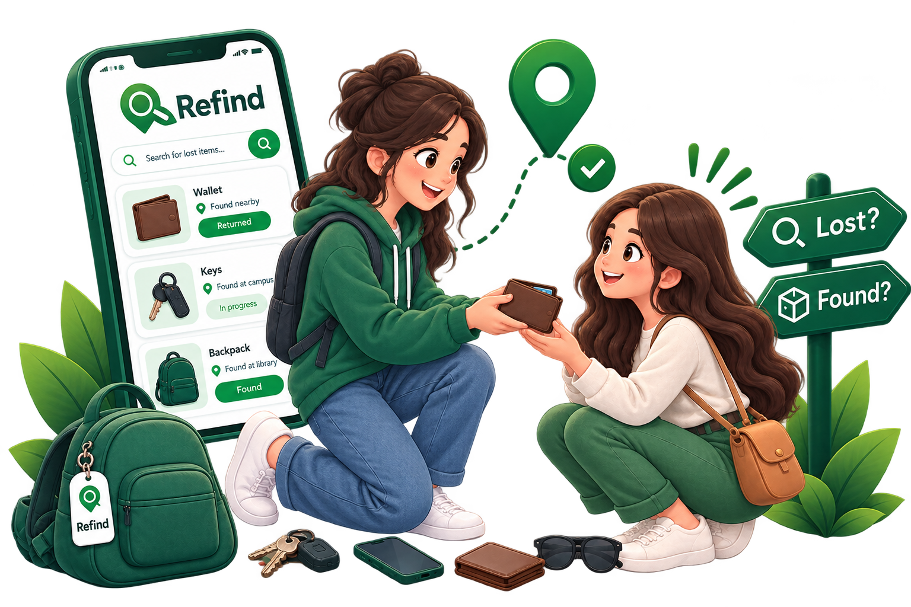

Ownership verified, privately
Lost something? It may already be waiting for you.
Refind connects honest finders with rightful owners. Every claim passes a hidden-detail check before a private chat opens — so nothing is handed to the wrong person.

A safer way to give things back
Report or search
Finders post what they found. Owners search by category, place and date.
Verify ownership
Answer the hidden-detail question only the owner would know.
Chat and hand over
A private chat opens so you can agree on a safe meeting point.
Found something today?
It takes about a minute to report it. Keep one small detail private and we’ll use it to verify the owner.